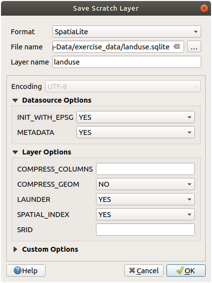

20. လေ့ကျင့်ခန်းအတွက် Data များပြင်ဆင်ခြင်း (Preparing Exercise Data)
Important
ဤလုပ်ငန်းစဉ်ကို သင်တန်းအတွက် နမူနာ dataset များဖန်တီးလိုသော သင်တန်းအကြီးအမှူးများ၊ သို့မဟုတ် အတွေ့အကြုံပိုများသော QGIS အသုံးပြုသူများအတွက် ရည်ရွယ်ပါသည်။ Default dataset များသည် Training Manual နှင့်အတူပါရှိပါသည်၊ သို့သော် default dataset များအစား အခြား dataset များကိုအသုံးပြုလိုပါက ဤလမ်းညွှန်ချက်များအတိုင်း လိုက်နာလုပ်ဆောင်နိုင်ပါသည်။
Training Manual နှင့်အတူပါရှိသော နမူနာ data သည် Swellendam မြို့နှင့် ပတ်ဝန်းကျင်နေရာများအတွက်ဖြစ်ပါသည်။ Swellendam သည် တောင်အာဖရိက၏ Western Cape ထဲရှိ Cape Town မှ ၂ နာရီခန့်သွားရသော နေရာတွင် တည်ရှိပါသည်။ Dataset ထဲတွင်ပါရှိသော feature နာမည်များသည် အင်္ဂလိပ် နှင့် အာဖရီကန်ဘာသာစကား နှစ်မျိုးလုံးဖြင့် ပါရှိပါသည်။
ဤ dataset ကို လူတိုင်း အလွယ်တကူအသုံးပြုနိုင်ပါသည်၊ သို့သော် သင့်နိုင်ငံ သို့မဟုတ် သင့်မြို့မှ data ကိုအသုံးပြုလိုပါက မော်ဂျူး ၃ မှ မော်ဂျူး ၇.၂ အထိ သင်ခန်းစာများအားလုံးအတွက် သင့်ကိုယ်ပိုင် data များကို အသုံးပြုနိုင်ပါလိမ့်သည်။ နောက်ပိုင်း မော်ဂျူးများတွင် အသုံးပြုထားသော data များသည် ပိုမိုရှုပ်ထွေးသော data ရင်းမြစ်များဖြစ်ပြီး သင့်ဒေသအတွက် ရှိနိုင်မှ ရှိနိုင်ပါလိမ့်မည်။
Note
ဤညွှန်ကြားချက်များသည် သင့်တွင် QGIS ဗဟုသုတကောင်းကောင်းရှိသည်ဟု ယူဆထားပြီး ၎င်းတို့ကို သင်ထောက်ကူအနေဖြင့် အသုံးပြုရန် မရည်ရွယ်ထားပါ။
20.1. Vector ဖိုင်များပေါ်အခြေခံသော OSM ဖန်တီးခြင်း (Create OSM based vector files)
Default dataset ကို သင့်ကိုယ်ပိုင် data ဖြင့်အစားထိုးအသုံးပြုလိုပါက QGIS တွင်ပါရှိသော tool များဖြင့် အလွယ်တကူလုပ်ဆောင်နိုင်ပါသည်။ အသုံးပြုရန် သင်ရွေးချယ်ထားသောဒေသတွင် မြို့ပြနှင့် ကျေးလက်ဧရိယာများရောနှောပါဝင်နေသင့်ပြီး အမျိုးအစားကွဲပြားသောလမ်းများ၊ ဧရိယာနယ်နိမိတ်များ (သဘာဝကာကွယ်တောများ သို့မဟုတ် စိုက်ပျိုးမြေများကဲ့သို့) နှင့် မြစ်ချောင်းများကဲ့သို့ ရေမျက်နှာပြင် များပါဝင်သင့်ပါသည်။
QGIS project အသစ်တစ်ခုကို ဖွင့်ပါ။
ကိုရွေးပါ၊ Data Source Manager dialog ပွင့်လာပါမည်။
Browser tab ထဲတွင် XYZ Tiles ကိုအကျယ်ဖြန့်ပြီး OpenStreetMap item ကို click နှစ်ချက်နှိပ်ပါ။

ကမ္ဘာ့မြေပုံတစ်ခုကို မြေပုံ canvas ပေါ်တွင် မြင်ရမည်ဖြစ်သည်။
Data Source Manager dialog ကိုပိတ်လိုက်ပါ။
Study area အဖြစ် အသုံးပြုလိုသော ဧရိယာသို့ နေရာရွှေ့ပါ။

ယခုအခါ data ထုတ်ယူလိုသော ဧရိယာကို ရရှိပြီဖြစ်ပါသည်၊ data ထုတ်ယူခြင်း tool များကို ဖွင့်ပေးပါမည်။
သို့သွားပါ
All tab ထဲရှိ search box တွင်
QuickOSMဟုရိုက်ထည့်ပါQuickOSM plugin ကိုရွေးချယ်ပါ၊ Install Plugin ကိုနှိပ်ပါ၊ ထို့နောက်တွင် dialog ကိုပိတ်ရန် Close ကိုနှိပ်ပါ။

menu မှ plugin အသစ်ကို ဖွင့်ပါ
Quick query tab ထဲရှိ Key drop-down menu ထဲတွင်
buildingကိုရွေးချယ်ပါValue field ကို အလွတ်အတိုင်းထားရှိပါ၊ building များအားလုံးကို query လုပ်မည်ဟု ဆိုလိုပါသည်။
အောက်ရှိ drop-down menu ထဲတွင် Canvas Extent ကိုရွေးချယ်ပါ
Advanced အုပ်စုကို ဖြန့်ကြည့်ပြီး ညာဘက်ရှိ ဂျီဩမေတြီအမျိုးအစားများထဲတွင် Multipolygons မှလွဲ၍ ကျန်အမျိုးအစားများကို အမှန်ခြစ်ဖြုတ်ပါ။
Run query ကိုနှိပ်ပါ

Layers panel ထဲတွင်
buildinglayer အသစ်တစ်ခုကို ထည့်သွင်းပေးမည်ဖြစ်ပြီး ရွေးချယ်ထားသော extent အတွင်းရှိ building များအားလုံးကို ပြသပေးမည်ဖြစ်ပါသည်။အခြားသော data များကိုထုတ်ယူရန် အထက်ဖော်ပြပါအတိုင်း လုပ်ဆောင်ပါ-
Key = landuseနှင့်MultipolygonsဂျီဩမေတြီအမျိုးအစားKey = boundary၊Value = protected_areaနှင့်MultipolygonsဂျီဩမေတြီအမျိုးအစားKey = natural၊Value = waterနှင့်MultipolygonsဂျီဩမေတြီအမျိုးအစားKey = highwayနှင့်Linesနှင့်Multilinesဂျီဩမေတြီအမျိုးအစားကို အမှန်ခြစ်ပါKey = waterway၊Value = riverနှင့်Linesနှင့်Multilinesဂျီဩမေတြီအမျိုးအစားကို အမှန်ခြစ်ပါKey = placeနှင့်Pointsဂျီဩမေတြီအမျိုးအစား
ဤလုပ်ငန်းစဉ်သည် layer များကို ယာယီဖိုင်များအဖြစ် ထည့်သွင်းပေးပါသည် (layer နာမည်များဘေးတွင်  icon ဖြင့် ဖော်ပြထားပါသည်)။
icon ဖြင့် ဖော်ပြထားပါသည်)။

သင့်ဒေသသည် မည်သို့သော ရလာဒ်အမျိုးအစားများ ထုတ်ပေးမည်ကို ကြည့်ရှုနိုင်ရန် သင့်ဒေသတွင်ပါရှိသော data များကို နမူနာယူနိုင်ပါသည်။
ရလာဒ် data များကို သင်၏သင်တန်းအတွင်း အသုံးပြုနိုင်ရန်အတွက် သိမ်းဆည်းထားရန်လိုအပ်ပါသည်။ Data ပေါ်မူတည်၍ ESRI Shapefile ၊ GeoPackage နှင့် SpatiaLite format များကို အသုံးပြုပါမည်။
place ယာယီ layer ကို အခြား format သို့ ပြောင်းလဲရန်-
place layer ၏ဘေးရှိ
icon ကိုနှိပ်ပါ၊ Save Scratch Layer dialog ပွင့်လာပါမည်။Note
ယာယီ layer တစ်ခုခု၏ ဂုဏ်သတ္တိများ (CRS ၊ extent ၊ field အစရှိသည်တို့) ကိုပြောင်းလဲရန် လိုအပ်ပါက ကိုအသုံးပြုပြီး Add saved file to map option ကိုအမှန်ခြစ်ထားပါ။ ထိုသို့လုပ်ခြင်းဖြင့် Layer အသစ်တစ်ခုကို ထည့်သွင်းပေးပါသည်။
ESRI Shapefile format ကိုရွေးချယ်ပါ
… ခလုတ်ကိုနှိပ်ပြီး
exercise_data/shapefile/folder ကိုဖွင့်ကာ ဖိုင်ကိုplaces.shpအနေဖြင့် သိမ်းဆည်းပါ။
OK ကိုနှိပ်ပါ
Layers panel ထဲတွင် ယာယီ place layer ကို သိမ်းဆည်းထားသော places shapefile layer ဖြင့် အစားထိုးပေးမည်ဖြစ်ပြီး ယာယီ icon ကိုဖယ်ရှားပေးမည်ဖြစ်သည်။
Layer ကို click နှစ်ချက်နှိပ်ပြီး tab ကိုဖွင့်ပြီး Layer name property ကို ဖိုင်နာမည်နှင့် ကိုက်ညီစေရန် update လုပ်ပါ။
အခြားသော layer များအတွက် ထိုအတိုင်းလုပ်ဆောင်ပြီး ၎င်းတို့ကို အောက်ပါအတိုင်း နာမည်ပြောင်းပေးပါ-
natural_waterကိုwaterသို့waterway_riverကိုriversသို့boundary_protected_areaကိုprotected_areasသို့
ရလာဒ် dataset တစ်ခုချင်းစီကို
exercise_data/shapefile/ဖိုင်လမ်းကြောင်းထဲတွင် သိမ်းဆည်းထားသင့်ပါသည်။
နောက်တစ်ဆင့်အနေဖြင့် သင်တန်းအတွင်းအသုံးပြုရန် building layer မှ GeoPackage ဖိုင်တစ်ခုဖန်တီးရန် ဖြစ်ပါသည်-
building layer ၏ဘေးရှိ
icon ကိုနှိပ်ပါGeoPackage format ကိုရွေးချယ်ပါ
ဖိုင်ကို
exercise_data/folder အောက်တွင်training_data.gpkgအနေဖြင့် သိမ်းဆည်းပါDefault အားဖြင့် Layer name ကို ဖိုင်နာမည်အတိုင်း ဖြည့်ပေးပါသည်။ ၎င်း Layer name ကို
buildingsဟုပြောင်းပါ။OK ကိုနှိပ်ပါ
Layer ၏ property dialog ထဲတွင် layer ကို နာမည်ပြောင်းပါ
highway layer တွင်လည်း ထိုလုပ်ငန်းစဉ်အတိုင်းလုပ်ဆောင်ပြီး တူညီသော GeoPackage database ထဲတွင်
roadsအနေဖြင့် သိမ်းဆည်းပါ။
နောက်ဆုံးအဆင့်အနေဖြင့် ကျန်ရှိနေသော ယာယီဖိုင်ကို SpatiaLite ဖိုင်အဖြစ် သိမ်းဆည်းရန်ဖြစ်ပါသည်။
landuse layer ၏ဘေးရှိ
icon ကိုနှိပ်ပါSpatiaLite format ကိုရွေးချယ်ပါ
ဖိုင်ကို
exercise_data/folder အောက်တွင်landuse.sqliteအဖြစ် သိမ်းဆည်းပါ။ Default အားဖြင့် Layer name ကို ဖိုင်နာမည်အတိုင်း ဖြည့်ပေးပါသည်။ ၎င်းကို မပြောင်းလဲပါနှင့်။ OK ကိုနှိပ်ပါ။
ယခုအခါ အောက်ပါပုံစံအတိုင်း မြေပုံတစ်ခုကို ရရှိသင့်ပါသည် (Layer များကို မြေပုံထဲသို့ထည့်သွင်းသောအခါ QGIS သည် အရောင်များကျပန်းသတ်မှတ်သောကြောင့် သင်္ကေတသည် ကွဲပြားပါလိမ့်မည်)-
အထက်တွင်ပြထားသော အဆိုပါ layer ၇ ခုရရှိမည်ဖြစ်ပြီး ထို layer များအားလုံးတွင် data အချို့ရှိရန် အရေးကြီပါသည်။
20.2. SRTM DEM tiff ဖိုင်များဖန်တီးခြင်း (Create SRTM DEM tiff files)
မော်ဂျူး- Vector Data များဖန်တီးခြင်း (Module: Creating Vector Data) နှင့် မော်ဂျူး - Raster များ (Module: Rasters) မော်ဂျူးများအတွက် သင်ရွေးချယ်ထားသောဒေသကို လွှမ်းခြုံသည့် raster image (SRTM DEM) ကိုလည်း လိုအပ်ပါလိမ့်မည်။
CGIAR-CGI သည် SRTM DEM အချို့ကို ထောက်ပံ့ပေးထားပြီး https://srtm.csi.cgiar.org/srtmdata/ မှ ဒေါင်းလုဒ်ပြုလုပ်နိုင်ပါသည်။
သင်ရွေးချယ်ထားသော ဒေသတစ်ခုလုံးကို လွှမ်းခြုံသော image များလိုအပ်ပါသည်။ Extent ကိုဩဒိနိတ်များကိုရှာဖွေရန် QGIS ထဲတွင် အကြီးဆုံး layer ၏ extent ကို  zoom ပြုလုပ်ပြီး status bar ၏ Extents အကွက်ထဲရှိ တန်ဖိုးများကို ရယူပါ။
zoom ပြုလုပ်ပြီး status bar ၏ Extents အကွက်ထဲရှိ တန်ဖိုးများကို ရယူပါ။ GeoTiff format ဖြင့်ထားပါ။ Form ကိုဖြည့်သွင်းပြီးသည်နှင့် Click here to Begin Search >> ခလုတ်ကိုနှိပ်ပြီး ဖိုင်(များ)ကို ဒေါင်းလုပ်ပြုလုပ်ပါ။
{kind=link}
လိုအပ်သောဖိုင်(များ)ကို ဒေါင်းလုဒ်ပြုလုပ်ပြီးသည်နှင့် ဖိုင်များကို exercise_data ဖိုင်လမ်းကြောင်းထဲရှိ raster/SRTM folder အခွဲအောက်တွင် သိမ်းဆည်းသင့်ပါသည်။
20.3. Imagery tiff ဖိုင်များဖန်တီးခြင်း (Create imagery tiff files)
မော်ဂျူး- Vector Data များဖန်တီးခြင်း (Module: Creating Vector Data) မော်ဂျူးထဲတွင် ★☆☆ လိုက်လုပ်ကြည့်ပါ- Data အရင်းအမြစ်များ (Follow Along: Data Sources) သင်ခန်းစာသည် ကျောင်းသားများကို digitize ပြုလုပ်ခိုင်းသော ကျောင်းအားကစားကွင်း ၃ ခု၏ အနီးကပ် image များကို ပြသပါသည်။ ထို့ကြောင့် သင်၏ SRTM DEM tiff ဖိုင်(များ) ကိုအသုံးပြုပြီး အဆိုပါ image များကို ပြန်လည်ထုတ်ယူရန် လိုအပ်ပါလိမ့်မည်။ ကျောင်းအားကစားကွင်းများကိုသာ အသုံးပြုရမည်ဟု မကန့်သတ်ထားပါ- မည်သည့် ကျောင်း land-use အမျိုးအစားများ (ဥပမာ- မတူညီသော ကျောင်းအဆောက်အဦများ၊ ကစားကွင်းများ သို့မဟုတ် ကားပါကင်များ) ၃ ခုကိုမဆို အသုံးပြုနိုင်ပါသည်။
အကိုးအကားပြုရန်အတွက် ဥပမာ data ထဲရှိ image သည်-
20.4. တိုကင်များ အစားထိုးလဲလှယ်ခြင်း (Replace tokens)
သင့်ဒေသအတွက် dataset ကိုဖန်တီးပြီးပါက နောက်ဆုံးအဆင့်အနေဖြင့် substitutions.txt ဖိုင်ထဲတွင် တိုကင်များကို အစားထိုးလဲလှယ်ရန်ဖြစ်ပါသည်၊ သို့မှသာ သင့်ကိုယ်ပိုင် Training Manual ဗားရှင်းတွင် သင့်လျော်သောနာမည်များ ပေါ်နေပါလိမ့်မည်။
အစားထိုးလဲလှယ်ရန် လိုအပ်သည့် တိုကင်များမှာ အောက်ပါအတိုင်းဖြစ်သည်-
majorUrbanName- Default အားဖြင့် “Swellendam” မြို့ ဖြစ်ပါသည်။ ၎င်းကို သင့်ဒေသရှိ အဓိကမြို့နာမည်ဖြင့် အစားထိုးလဲလှယ်ပါ။schoolAreaType1- Default အားဖြင့် “athletics field” ဖြစ်ပါသည်။ ၎င်းးကို သင့်ဒေသရှိ အကြီးဆုံးကျောင်းဧရိယာအမျိုးအစား၏နာမည်ဖြင့် အစားထိုးလဲလှယ်ပါ။largeLandUseArea- Default အားဖြင့် “Bontebok National Park” ဖြစ်ပါသည်။ ၎င်းကို သင့်ဒေသရှိ ကြီးမားသော landuse polygon တစ်ခု၏နာမည်ဖြင့် အစားထိုးလဲလှယ်ပါ။srtmFileName- Default အားဖြင့်srtm_41_19.tifဖိုင်ဖြစ်ပါသည်။ ၎င်းကို သင်၏ SRTM DEM ဖိုင်နာမည်ဖြင့် အစားထိုးလဲလှယ်ပါ။localCRS- Default အားဖြင့်WGS 84 / UTM 34SCRS ဖြစ်ပါသည်။ ၎င်းကို သင့်ဒေသအတွက် မှန်ကန်သော CRS ဖြင့် အစားထိုးလဲလှယ်သင့်ပါသည်။